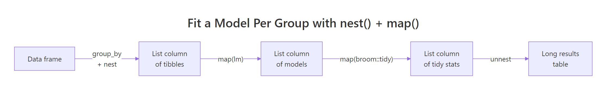
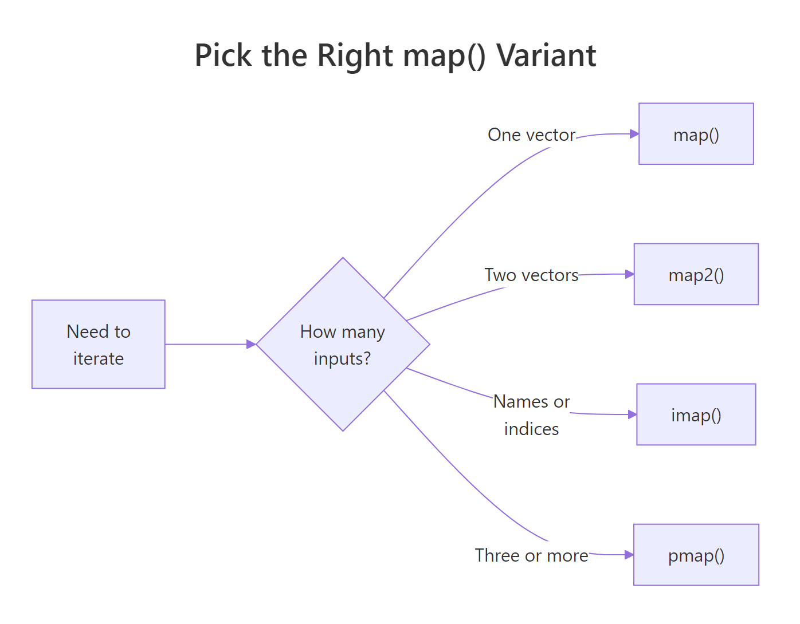

purrr map() Functions in R: map, map2, imap, pmap — Functional Data Processing
purrr's map() family turns messy real-world data into tidy results without writing loops. With map(), map2(), imap(), and pmap() — plus safely() for resilience — you can read dozens of files at once, run row-wise calculations, fit a model per group, and label outputs with their source names.
How do you read and combine multiple CSV files with map()?
Imagine twelve monthly sales exports — same columns, twelve files. The loop-and-append version is fragile; the purrr version is one pipeline. map_dfr() reads each file with the function you give it and binds the rows into a single tibble in one shot. The example below generates three CSVs in a temp directory so you can run it end-to-end without leaving the browser.
We will write three tiny CSVs, list them, and read them back into one tibble. Watch the .id argument — it tags every row with the file it came from, so you never lose track of source.
Three files in, one tibble out — and no loop. The .id column shows which file each row came from. Right now .id is just a position number; the next exercise turns it into a readable file name. This is the smallest possible version of "read every file in a folder," and it scales unchanged from 3 files to 300.
.id to track the source of every row. Without it you cannot tell which file produced which row after the bind — a top-3 cause of silent data-quality bugs in monthly batch pipelines.Try it: Make the .id column show file names like jan.csv instead of 1, 2, 3. Hint: set_names() on the file path vector, then run the same map_dfr() call.
Click to reveal solution
Explanation: set_names() attaches names to the file path vector. map_dfr() then uses those names — instead of integer positions — for the .id column.
How does map2() apply a function over two parallel vectors?
Sometimes you have two synchronized vectors that need to march in lockstep — prices and discounts, predictions and actuals, names and scores. map2() is the variant for exactly that case. It walks both inputs at once, calling the function with .x from the first vector and .y from the second.
We will compute final prices from a price list and a per-product discount rate. The lambda receives one price and one rate per call; map2_dbl() collects the answers into a numeric vector.
Each price was multiplied by its own discount rate — not the average rate, not the wrong rate, the exact paired one. The _dbl suffix forces a numeric vector out (instead of a list), so the result drops cleanly into sum() or any downstream calculation. If prices and discounts had different lengths, map2_dbl() would error immediately rather than silently recycling.
map2() requires equal-length inputs. If .x and .y differ in length, the call fails fast with a clear error — saving you from the silent recycling bugs that haunt base R * and + operations on mismatched vectors.Try it: Compute percent change between two vectors ex_old and ex_new using map2_dbl(). Formula: (new - old) / old * 100.
Click to reveal solution
Explanation: map2_dbl() walks ex_new and ex_old in parallel, applying the percent-change formula to each pair and returning a numeric vector.
How do you use pmap() for row-wise operations on a data frame?
Two inputs become awkward fast when you have three, four, or five. That is where pmap() takes over. It accepts a single list (or data frame) and walks it in parallel — column by column for a data frame, slot by slot for a list. The function you supply gets one argument per element. Because a data frame is a list of equal-length vectors, this is the cleanest way to do row-wise calculations with column-name parameters.
We will compute body mass index for a small tibble of people. The function declares one parameter per column it needs and a ... to silently absorb anything else, so you can grow the tibble without breaking the function.
pmap_dbl() walked the tibble row by row. Each call received name, height_m, and weight_kg as named arguments, computed BMI, and the results stacked into a numeric vector. The ... is the secret: tomorrow you can add an age column to people and this function still runs without modification. That is the row-wise robustness that hand-written loops rarely get right.
pmap() is the bridge between functional and row-wise thinking. Treat each row as a named argument list and your function never has to know about subsetting, indexing, or i. The data frame is the "input list" and pmap walks it for you.Try it: Write the same BMI calculation back into the people tibble as a new column called bmi. Hint: combine mutate() with pmap_dbl() and use pick(everything()) so pmap sees the row.
Click to reveal solution
Explanation: pick(everything()) hands the current row's columns to pmap_dbl(). The lambda destructures them by name and computes BMI; the result is stored back as a new column.
How do you fit a model for each group using nest() + map()?
The single most common purrr pattern in real analysis is "fit one model per group, then compare." It uses three building blocks: group_by() + nest() packs each group's rows into a list-column, map() runs a function on each packed tibble, and unnest() flattens the result back into rows. Combined with broom::tidy() for clean coefficient tables, it replaces every for-loop you ever wrote around lm().
The flow has just enough moving parts that a picture helps. Below it, we will fit mpg ~ wt separately for 4-, 6-, and 8-cylinder cars and produce one tidy coefficient table.

Figure 1: The nest → map → tidy → unnest pipeline that fits a model per group and returns one tidy table.
Each cylinder group got its own regression of mileage on weight. The slope on wt is steepest for 4-cylinder cars (−5.65) and gentlest for 8-cylinder cars (−2.19), meaning every extra 1000 lb costs more miles per gallon in a small car than a big one. We never wrote a loop, and we never lost the cylinder label — the list-column kept everything aligned.
map_dbl(). Once mtcars_models exists, map_dbl(mtcars_models$model, \(m) summary(m)$r.squared) returns one R² value per group as a clean numeric vector — no unnesting needed.Try it: Add an r2 column to mtcars_models containing each group's R² from summary(model)$r.squared.
Click to reveal solution
Explanation: map_dbl() walks the model list-column, calls summary()$r.squared on each fitted model, and returns one numeric value per group.
How does imap() use element names or indices?
Sometimes you need both the value AND its label. imap(x, f) is shorthand for map2(x, names(x), f) when x has names, or map2(x, seq_along(x), f) when it does not. The function gets the value as .x and the name (or index) as .y. This is the cleanest way to produce labeled report lines, debug messages, or grouped summaries that need the group label inside the output.
We will turn a small named list of regional sales vectors into one printable summary line per region.
Every line carries its region label baked in — no parallel vector of names to manage, no risk of misaligning labels with values. imap_chr() returns a character vector (one per element), perfect for writeLines() or the body of a Slack message. If regions had no names, .y would be the integer index and you would get "1: mean = ..." instead.
names(), imap() falls back to seq_along(x), so you get position numbers for free. Useful when iterating over an unnamed list of files or batches and you want "row 3 failed" style messages.Try it: Use imap_chr() on an unnamed list of three numeric vectors to print lines like "Batch 1: sum = 6".
Click to reveal solution
Explanation: Because ex_unnamed has no names, imap() passes the integer index as .y. We use it to build the "Batch N" prefix, then append the sum.
How do you handle errors in pipelines with safely() and possibly()?
Real data is messy — one bad row, one missing file, one malformed string can crash an entire map() call and lose every result that came before it. purrr's two adapters fix this. safely(f) wraps f so it returns a list of (result, error) for every call — failures become data, not exceptions. possibly(f, otherwise) is simpler: it returns otherwise when f errors, so you can ask for a numeric vector and get NA for the bad ones.
We will mix valid numbers, a string, and a negative — log() will succeed, fail, or return NaN accordingly — and see both adapters in action.
safely() gives you both halves of every call so you can audit failures (the third element returned a real R error message instead of crashing). possibly() is the production-friendly version: it returns NA for the string and NaN for the negative, and you get a clean numeric vector you can pipe directly into the next step. Pick safely() when you need to log failures, possibly() when you need the pipeline to keep moving.
possibly() and forget to log the failures. Silently dropping bad rows is how data pipelines mysteriously lose 5% of their inputs each month. Pair possibly() with a summary count of the NAs it produced.Try it: Wrap as.numeric in possibly() so a mixed character vector converts cleanly with NA for unparseable entries.
Click to reveal solution
Explanation: possibly(as.numeric, NA_real_) returns the parsed number when conversion works, and NA_real_ when it fails. map_dbl() collects the results into a clean numeric vector.
Practice Exercises
Exercise 1: Multi-file ingest with a row-wise total
You have three small CSVs of (item, price, qty). Read and bind them into one tibble with a source column showing the file name, then add a per-row total = price * qty column using pmap_dbl(). Save the final tibble as ex1_with_total.
Click to reveal solution
Explanation: set_names(basename(...)) turns positional ids into file names. pick(price, qty) hands the two columns to pmap_dbl() as a list, which the lambda multiplies row by row.
Exercise 2: Per-group regression report lines
Group mtcars by cyl, fit lm(mpg ~ hp) per group, then build labeled report lines like "4 cyl: slope = -0.113, R² = 0.65" using imap_chr() over a named list of model summaries. Save the lines to ex2_lines.
Click to reveal solution
Explanation: set_names() attaches readable labels to the model list. imap_chr() walks each model with its label, extracting the slope from coef() and R² from summary(), then formats one report line per group.
Putting It All Together
This end-to-end pipeline is the kind of task that lands in a data analyst's inbox on Monday morning: "Pull the regional monthly sales, add a margin column, fit a trend per region, and write me a one-line summary for each region." Every step uses one of the variants we just covered.
Five steps, four variants, zero loops. map_dfr() consolidated the files, pmap_dbl() did the row-wise margin, map() fit one model per region, and imap_chr() produced labeled output. The exact numbers will differ each run because the sample data is random, but the shape of the answer — one tagged report line per region — is what the rest of your pipeline (Slack, email, dashboard) wants.
Summary

Figure 2: Pick the right map variant by counting parallel inputs.
| Variant | Inputs | Returns | Use it when |
|---|---|---|---|
map() |
1 vector/list | list | Apply a function to every element |
map_dfr() |
1 list of data frames | tibble | Stack many frames into one |
map2() |
2 parallel vectors | list (or _dbl/_chr typed) |
Walk two vectors in lockstep |
pmap() |
n named vectors / data frame rows | list (or typed) | Row-wise calculation across columns |
imap() |
1 list (with names or indices) | list (or typed) | You also need names or positions |
safely() / possibly() |
wrap any function | error-safe function | Resilient pipelines on messy data |
The decision rule is mechanical: count the parallel inputs you need. One? map(). Two? map2(). Three or more, or a data frame's columns? pmap(). Need the name or index alongside the value? imap(). Worried about a step crashing the whole pipeline? Wrap it in safely() or possibly().
References
- Wickham, H. — Advanced R, 2nd Edition, Chapter 9: Functionals. Link
- Wickham, H. & Grolemund, G. — R for Data Science (2e), Chapter 26: Iteration. Link
- tidyverse blog — purrr 1.0.0 release notes. Link
- purrr reference —
map2(). Link - purrr reference —
pmap(). Link - purrr reference —
safely(). Link - broom package documentation. Link
Continue Learning
- purrr map() Variants — every map() variant explained with the mental model that makes them click.
- dplyr group_by() + summarise() — the parent post on group-wise aggregation.
- Reduce, Filter, Map in R — base R analogues to purrr's higher-order toolkit.